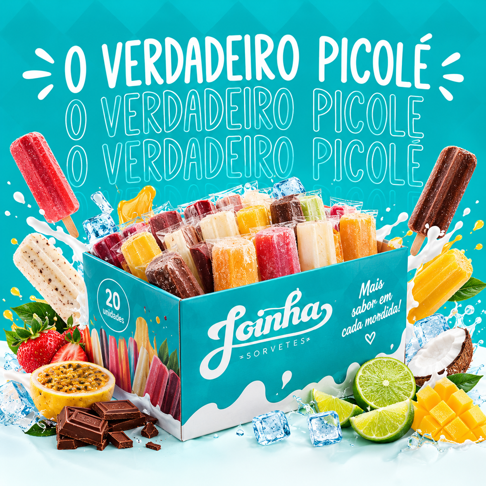
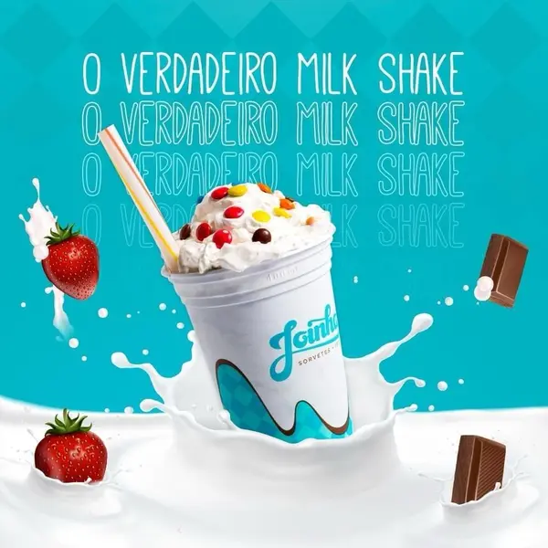
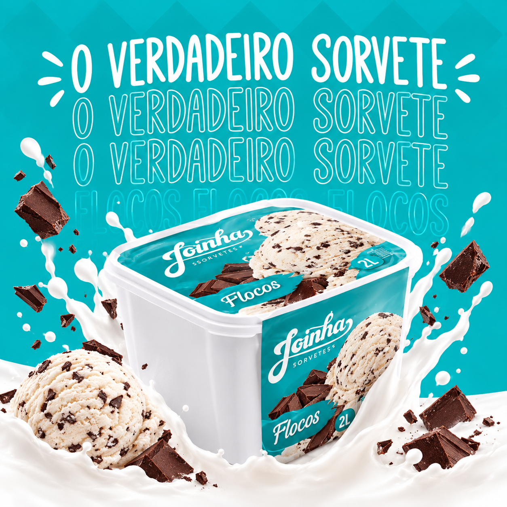
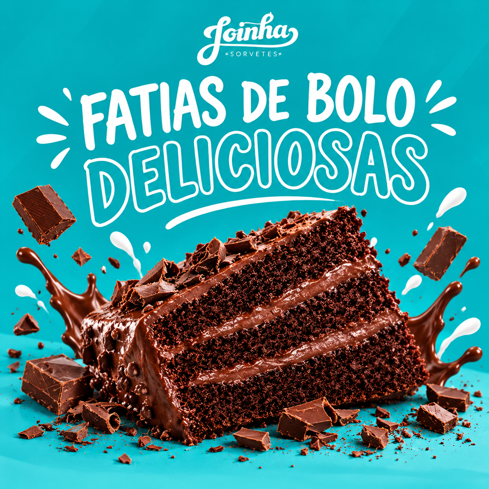

Nossos Destaques
Confira algumas das delícias da Joinha!

Caixa de Picolé
Caixa com 20 unidades e uma deliciosa variedade de sabores.
Saiba mais
Milk Shake
Um milkshake delicioso para refrescar seu dia com muito sabor.
Saiba mais
Sorvete de Massa
Nosso delicioso sorvete de massa em um pote de 2 litros.
Saiba mais
Sorvete para Compartilhar
Mais sabor e alegria para aproveitar bons momentos com quem você gosta.
Saiba maisNossa História
A Joinha Sorvetes é uma tradicional empresa familiar fundada em 1972, na cidade de Cerquilho, no interior de São Paulo.
- 1972 - O Início A marca começou pelas mãos de Dona Maria das Dores Duarte, que transformou sua paixão por receitas artesanais em um negócio de família.
- Os Primeiros Passos Os picolés e sorvetes eram vendidos em carrinhos de rua que circulavam pelos bairros de Cerquilho.
- Dona Maria e o Mascote A fundadora inspirou a marca com seu sorriso, que deu origem ao mascote presente nas embalagens.
- Expansão e Nova Fábrica Com décadas de crescimento, a empresa planeja expandir sua estrutura em Cerquilho, gerando novas oportunidades locais.
- Presença Regional A marca ampliou sua presença com sorveterias, casinhas e mercados parceiros na região.